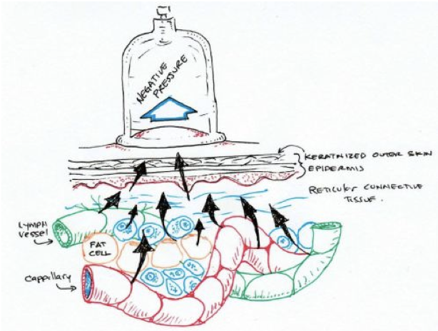
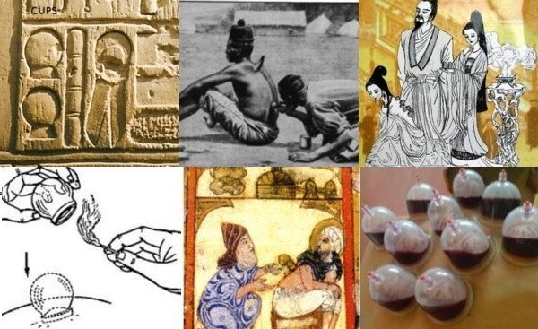
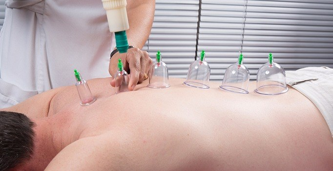
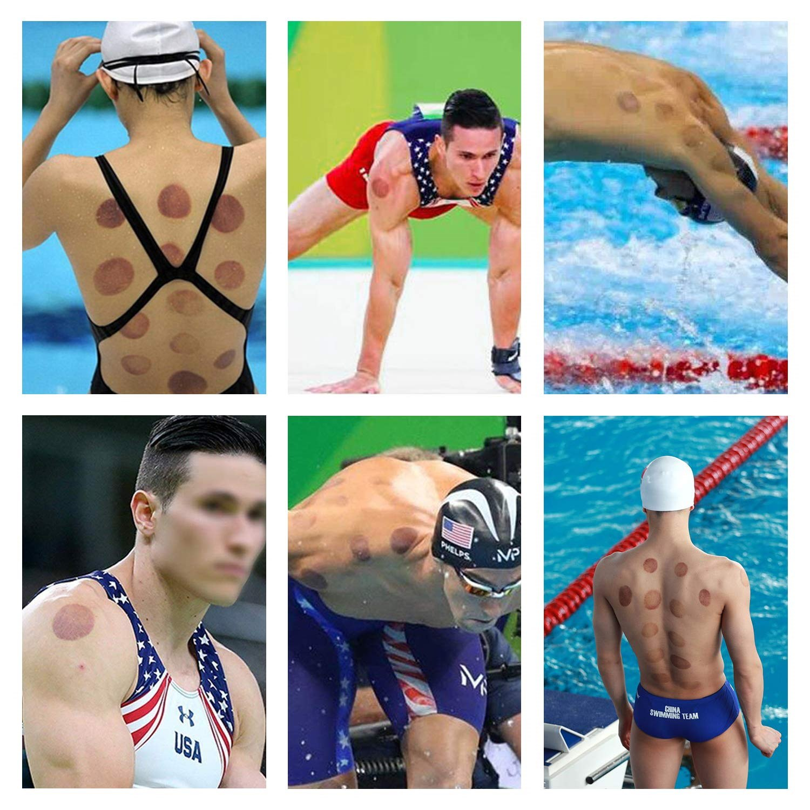

KUPA TERAPİSİ
Merhaba,
Sizlere bugün geleneksel ve tamamlayıcı tıbbın, en eski öğretilerinden biri olan kupa terapisinden bahsedeceğim. Avrupa'da Wet Cupping ve Hijama, ülkemizde ise Hacamat olarak bildiğimiz bu kadim uygulama aslında yeni bir tedavi şekli değildir.
İstanbul Medipol Üniversitesinden kupa terapisi eğitimini almadan önce, babaannemin tüm mahalleye bardak çektiği ifadesini babamdan duymuştum. İnsanların bir yerleri ağrıyor diye neden sırtlarına alkollü pamuk ile tutuşturulan bardak konduğunu ve bu işlemi uygulatanların neden kırgınlıklarına ve kulunç ağrılarına iyi geldiğini anlamamıştım.
Şimdi isterseniz, konu başlıklarıyla beraber kısa ve ayrıntılara girmeden en şeffaf haliyle, bu sağlık terapi yöntemini beraber inceleyelim.
Tarihçe
En eski dökümanların M.Ö 3300 yıllarında Makedonyalıların, dolgunluk nerede orayı boşalt diyerek, hacamat tedavisi yaptıklarını ve Antik Mısırlıların Ebers papiruslarında M.Ö 1500 yıllarında, ''yabancı maddelerin kan yoluyla atılması'' olarak tarif etmelerinden anlıyoruz. Batı tıbbın öncüleri sayılan Galen, Hipokrat da bu yöntemi uygulamış ve tavsiye etmiştir. İbni Sina ve Zehravinin M.S 900'lü yıllarda uyguladığı bu yöntemi, Finlandiyada da 15.yy'dan beri geleneksel olarak saunalarda uygulanıyor olması ve ilginç olarak Mozart’ın eşinin mektuplarında bahsetmesi gibi örneklerin çoğaltılabileceği ve her döneme bir şekilde bu terapinin damgasını vurmasından anlayabiliyoruz. Özellikle 18. ve 19. yy'da Amerika Birleşik Devletleri ve Batı dünyasında yaygın hale gelen bu uygulama, 2016 Rio Olimpiyatları'nda ismini tüm dünyada zirveye taşıdı diyebilirim.
Bazı yüzücülerin sırt ve omuzlarında görülen izlerin, ne olduğunu anlamaya çalışan medya ve gazeteciler, yaptıkları haberler ile herkesin dikkatini bu noktaya çektiler. Yüzme antrenörleri yoğun olarak çalışan sporcuların dokularını iyileştirmek ve ağrılarını azaltmak amacı ile kupa terapileri uygulamışlardı.
Türkiye’de Kupa Terapisi Kupa uygulaması
Türkiye’de 27.10.2014 tarihli ve 29158 sayılı Resmi Gazetede yayınlanan Geleneksel ve Tamamlayıcı Tıp Uygulamaları Yönetmeliği ile Sağlık Bakanlığı tarafından bir tedavi yöntemi olarak kabul edilmiştir.16.10.2015 tarihinde yayınlanan Kupa Uygulaması eğitim standardı ile birlikte tabip ve kendi alanlarında uygulama yapmak üzere diş tabiplerinin 40 saatlik eğitim sonrasında kupa uygulama sertifikası alabilmesi imkanı sağlanmıştır.
Kupa Terapisi ve Etki Mekanizması Nedir?
Herhangi bir hastalıktan dolayı veya sağlıklı kalmak maksadıyla, belirli vücut bölgelerine (bu genelde akupunktur noktalarıdır.) kupa ile vakum uygulandıktan sonra, aynı alanlar üzerine küçük kesiler (1 mm derinliğinde) yapıldıktan sonra tekrar vakumlanarak kan alınması işlemidir.
Bu tanımlama akla hemen, ''Kan alınacak ise neden damardan bu işlemi uygulamıyoruz?'' sorusunu getiriyor. Çünkü amacımız venöz sistemdeki yani, toplardamardaki kirli kanı almak değil (biz buna flebotomi diyoruz.) O zaman biz kupa terapisi ile neyi hedefliyoruz?
- Toksinleri uzaklaştırarak vücudumuzun iyileştirme mekanizması önündeki engeli kaldırıyoruz. (Toksinler çok uzun ve ayrıntılı ele alınması gereken bir konudur. Bilinmesi gereken dış toksinlere maruz kalmadığımız ve vücudumuza almadığımız bir yaşam şekli şu anda mevcut değildir.)
- Lenfatik sisteme (beyaz kan) destek olması ve mikro dolaşımı arttırması hayati öneme sahiptir.
- Deride birçok hücre grubunu uyararak Vazo aktif aminlerin (histamin, seratonin gibi) salgılanmasını sağlamaktadır.
- NO (Nitrik oksit) salınımını arttırması (NO, damarı genişleterek kan basıncını düşüren, damarda plak gelişmesini engelleyerek kalp krizi riskini azaltan ve 1998'de Amerikalı fizyolağa Nobel TIp Ödülü kazandıran serbest bir gazdır.)
- Derinin bağışıklık yanıtının uyarılması (interferonlar ve tümör nekroz faktör düzeylerindeki artıştır.)
- Merkezi sinir sitemine ağrının baskılanması, yani azaltılması yönünde endorfin ve enkafalin salınımını sağlayarak ağrı kesici özelliğinin olması gibi birçok farklı etki mekanizması vardır.
Kupa Terapisi Faydaları Nelerdir?
O zaman Sağlık Bakanlığımızın yayınladığı Hacamatın hangi hastalıklarda faydalı olduğunu gösteren resmi listeye bakalım;
- Sırt ağrısı,
- Miyozit (kas iltihabı),
- Tendinopati (tendonun hastalığı ve bozukluğudur.),
- Spor yaralanmaları,
- Pskiyalji (Kalça ağrısı),
- Lumbalji (bel ağrısı),
- Brakiyalji (boyun ve omuz ağrısı),
- Disk patolojileri (fıtıklar),
- Fibromiyalji,
- Stres baş ağrısı, migren,
- Bruksizm (uykuda diş sıkma),
- Sudeck atrofisi (kaslarda zayıflama),
- Post-Zoster nevralji (zona),
- Trigeminal nevralji (yüzdeki sinir ileti bozukluğu),
- Astım, Bronşit,
- Sinüzit (yüzdeki boşlukların iltihabı),
- Larenjit (ses kutusu iltihabı),
- Otit (orta kulak iltihabı),
- Hiperkinetik kalp hastalığı (yüksek debiden kaynaklanan kalp hastalığı),
- GİS problemleri, bulantı, kusma,
- Dolaşım sistemi bozukluklarında (koroner arter hastalığı, inme, kalp yetmezliği, hipertansiyon, kardiyak ritim bozukluğu ve kalp kapak hastalığı) .
Diğer Ülkelerde Kullanılan Faydalanımlar
- İntervertebral disk patolojileri ,
- Sekonder amenore, infertilite, dismenore,
- Astım, alerjik rinit ,
- Akne, atopik dermatit,
- Karpal tünel sendromu ,
- Herpes zoster,
- Talasemi ve hemokromatozis ,
- Hiperlipidemi.
Yukarıda belirlenmiş faydalar dışında ve Sağlık Bakanlığı’nın ruhsatlandırdığı birimler haricinde kupa uygulaması yapılması yasal olarak mümkün değildir.
Kimlere ve Hangi Bölgelere Yapılmaz?
- Derin anemisi olan yani hemoglobin 9.5 altında olanlara,
- Varislerin direk üzerine,
- Organ nakli olmuş imminosupresif tedavi alan kişilere (bağışıklık sistemi baskılayıcı tedavi alanlar),
- Açık yara üstüne,
- Tromboflebit üzerine (özellikle bacak damarlarını ve toplar damarlarını tutan bir hastalıktır.),
- Hemofili hastalığı olanlar (kan pıhtılaşma hastalığıdır.),
- Hamile ve menstrüel yani adet dönemindeki kadınlara,
- 2 yaşından küçüklere ve 70 yaşından büyüklere,
- Ben ve et benlerinin üzerine,
- Yüzeyel damarların olduğu, koltuk altı, diz eklemi arkasındaki çukurluk, ense kökü ve yüze uygulanmaz.
Hacamatın hiçbir yan etkisi yoktur. Tamamen doğal bir tedavi yöntemidir. Ancak önemli bir ayrıntıyı burada sizlerle paylaşmalıyım. Eğitimini almamış, bizim merdiven altı dediğimiz kişilerce ve steril olmayan ortamlarda yapılması sonucu, yara yeri enfeksiyonları bilinçsiz ellerin yaptığı (çiziklerin sayı ve derinliklerinin uygun olmaması) sonucunda hastalar sağlık problemi yaşayabilirler. Bir diğer önemli konu ise kupa terapisi yaptırmak isteyenlerin bu işlem öncesi ve sonrasında dikkat etmesi gereken bazı hususlar vardır.
Uygulamadan Önce Dikkat Edilmesi Gerekenler
- 24 saat hayvansal gıda yenmemesi, yani vegan bir beslenme,
- 24 saat için cinsel perhizde bulunulması,
- 12 saat öncesinde kan akışkanlığını ve pıhtılaşmasını bozacak ilaçlar (NSAİİ, Aspirin gibi),
- Yarı aç ve tok olmalarını, en az 3 saat önceden yeme içmenin kesilmesi,
- Spor yapmamış olması ve vücudun dinç olması gibi maddelere dikkat edilmelidir.
Uygulamadan Sonra Dikkat Edilmesi Gerekenler
- En az 2 saat bir şeyler yenilip içilmemelidir,
- En az 12 saat geçtikten sonra duş alınmalıdır.
- Hayvansal gıda almamaya ve cinsel perhize 24 saat daha devam edilmelidir.
- Ağır spor ve yorucu fiziksel işlerden kaçınılmalıdır.
- Bol su içmek işlemi takip eden gün içinde önemlidir.
Kupa terapisi 7’den 70’e herkese yapılabilir. Genellikle bir seansta 7 ile 10 adet kupa yapılır. Ancak kupa sayısı, hastalık ve bölgenin durumuna göre değişkenlik gösterebilir. En çok toksinin biriktiği, geniş bir yüzey olan sırt bölgesi ilk uyguladığımız alandır. Daha sonra belli noktalardaki eklem ve kas grupları, üçüncü olarak da baş bölgesinde uygulamalar yapılıyor. Hacamat tıbbi açıdan 12 ay ve yılın 365 günü yapılabilir. İlkbahar ve sonbaharda yaptırılan hacamat, kış ve yaz aylarında yaptırılacak hacamatlara göre bir kat daha faydalıdır diye söylenir. Hiçbir hastalığı olmayan kişilere yılda 2 kere belli bir hastalığa yönelik, doktorun belirlediği seans koşulu ile 7-8 kere ve aynı bölgeye 3 haftadan önce tekrarı olmamak koşulu ile yapılabilir. Kesinlikle bağımlılık yapmaz. Faydasını görenler sadece birbirine tavsiye edebilirler.
Sonuç
Kupa terapisi, binlerce yıllık geçmişi olan, geleneksel ve tamamlayıcı tıp uygulamaları arasında ülkemizde en sık uygulanan yöntemlerden biridir. Oldukça geniş sağlık faydaları için kullanılan kupa terapisi, hastaların mevcut tedavilerine ek, tamamlayıcı bir unsur olarak kullanılabilir. Hakkında yapılmış bilimsel yayınların az olması nedeniyle etki mekanizmasının ve sağlık faydalarının doğru bir şekilde ortaya konabilmesi için akademik çalışmaların artması gerekmektedir.
Yaklaşık 4 yıldır kupa terapisini aktif yapan bir hekim olarak, bu uygulamadan fayda görmeyen hiçbir hastam olmadı. Ancak hastalık yoktur hasta vardır ilkesi ve kişilerin uygulamadan önce ve sonrasındaki kurallara uyum gösterme durumuna göre faydalanma oranı %20 ile 90 arasında değişti diyebilirim. Ortak gördüğüm etkiler arasında; kupa terapisi sonrası hastalarda enerji düzeylerinde artış, uyku düzen değişiklikleri ve azalan kas ve eklem ağrıları idi. Hastaların günlük yaşamında anlam veremedikleri pozitif duygulanımlarda bu ortak sonuçlarda yer aldı.
Oyak Renault ailesine dahil olduğum bu kısa dönemde, kupa terapisini uygulama şansına ve imkanına sahip oldum. Sağlık servisinde tamamen ücretsiz olarak kupa terapisine başladığım bu süreçte, uygulama yaptığımız çalışanlarımızın geri bildirimlerinin olumlu olması beni çok mutlu etti. Umarım verdiğim bilgiler merak ettiğiniz sorulara cevap olmuştur. Bu yazı ve birçok ayrıntısıyla beraber kaydını yaptığım kupa terapisi podcast dinletisine de ulaşabilirsiniz.
Hepinize sağlıklı ve mutlu bir yaşam dilerim.